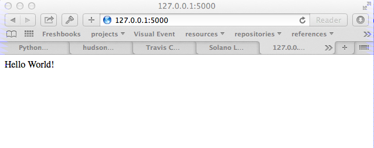

Python Web Programming

Session 5: Frameworks and Flask
image: Britanglishman http://www.flickr.com/photos/britanglishman/5999131365/ - CC-BY
A Moment to Reflect
We've been at this for a couple of days now. We've learned a great deal:
- Sockets, the TCP/IP Stack and Basic Mechanics
- Web Protocols and the Importance of Clear Communication
- APIs and Consuming Data from The Web
- CGI and WSGI and Getting Information to Your Dynamic Applications
Everything we do from here out will be based on tools built using these foundational technologies.
From Now On
Think of everything we do as sitting on top of WSGI
This may not actually be true
But we will always be working at that level of abstraction.
Frameworks
From Wikipedia:
A web application framework (WAF) is a software framework that is designed to support the development of dynamic websites, web applications and web services. The framework aims to alleviate the overhead associated with common activities performed in Web development. For example, many frameworks provide libraries for database access, templating frameworks and session management, and they often promote code reuse
What Does That Mean?
You use a framework to build an application.
A framework allows you to build different kinds of applications.
A framework abstracts what needs to be abstracted, and allows control of the rest.
Think back over the last four sessions. What were your pain points? Which bits do you wish you didn't have to think about?
Level of Abstraction
This last part is important when it comes to choosing a framework
- abstraction ∝ 1/freedom
- The more they choose, the less you can
- Every framework makes choices in what to abstract
- Every framework makes different choices
Impedance Mismatch
Don't Fight the Framework
Python Web Frameworks
There are scores of 'em (this is a partial list).
| Django | Grok | Pylons | TurboGears | web2py |
| Zope | CubicWeb | Enamel | Gizmo(QP) | Glashammer |
| Karrigell | Nagare | notmm | Porcupine | QP |
| SkunkWeb | Spyce | Tipfy | Tornado | WebCore |
| web.py | Webware | Werkzeug | WHIFF | XPRESS |
| AppWsgi | Bobo | Bo7le | CherryPy | circuits.web |
| Paste | PyWebLib | WebStack | Albatross | Aquarium |
| Divmod | Nevow | Flask | JOTWeb2 | Python Servlet |
| Engine | Pyramid | Quixote | Spiked | weblayer |
Choosing a Framework
Many folks will tell you "<XYZ> is the best framework".
In most cases, what they really mean is "I know how to use <XYZ>"
In some cases, what they really mean is "<XYZ> fits my brain the best"
What they usually forget is that everyone's brain (and everyone's use-case) is different.
Cris' First Law of Frameworks
Pick the Right Tool for the Job
First Corollary
The right tool is the tool that allows you to finish the job quickly and correctly.
But how do you know which that one is?
Cris' Second Law of Frameworks
You can't know unless you try
so let's try
From Your Homework
During the week, you walked through an introduction to the Flask web framework. You wrote a file that looked like this:
from flask import Flask app = Flask(__name__) @app.route('/') def hello_world(): return 'Hello World!' if __name__ == '__main__': app.run()
The outcome
When you ran this file, you should have seen something like this in your browser:
What's Happening Here?
Flask the framework provides a Python class called Flask. This class functions as a single application in the WSGI sense.
We know a WSGI application must be a callable that takes the arguments environ and start_response.
It has to call the start_response method, providing status and headers.
And it has to return an iterable that represents the HTTP response body.
Under the Covers
In Python, an object is a callable if it has a __call__ method.
Here's the __call__ method of the Flask class:
def __call__(self, environ, start_response): """Shortcut for :attr:`wsgi_app`.""" return self.wsgi_app(environ, start_response)
As you can see, it calls another method, called wsgi_app. Let's follow this down...
Flask.wsgi_app
def wsgi_app(self, environ, start_response): """The actual WSGI application. ... """ ctx = self.request_context(environ) ctx.push() error = None try: try: response = self.full_dispatch_request() except Exception as e: error = e response = self.make_response(self.handle_exception(e)) return response(environ, start_response) #...
response is another WSGI app. Flask is actually middleware
Abstraction Layers
Finally, way down in a package called werkzeug, we find this response object and it's __call__ method:
def __call__(self, environ, start_response): """Process this response as WSGI application. :param environ: the WSGI environment. :param start_response: the response callable provided by the WSGI server. :return: an application iterator """ app_iter, status, headers = self.get_wsgi_response(environ) start_response(status, headers) return app_iter
Common Threads
All Python web frameworks that operate under the WSGI spec will do this same sort of thing.
They have to do it.
And these layers of abstraction allow you, the developer to focus only on the thing that really matters to you.
Getting input from a request, and returning a response.
A Quick Reminder
Over the week, in addition to walking through a Flask intro you did two other tasks:
You walked through a tutorial on the Python DB API2, and learned how to use sqlite3 to store and retrieve data.
You also read a bit about Jinja2, the templating language Flask uses out of the box, and ran some code to explore its abilities.
Moving On
Now it is time to put all that together.
We'll spend this session building a "microblog" application.
Let's dive right in.
Start by activating your Flask virtualenv
Our Database
We need first to define what an entry for our microblog might look like.
Let's keep it a simple as possible for now.
Create a new directory microblog, and open a new file in it: schema.sql
drop table if exists entries; create table entries ( id integer primary key autoincrement, title string not null, text string not null );
App Configuration
For any but the most trivial applications, you'll need some configuration.
Flask provides a number of ways of loading configuration. We'll be using a config file
Create a new file microblog.cfg in the same directory.
# application configuration for a Flask microblog DATABASE = 'microblog.db'
Our App Skeleton
Finally, we'll need a basic app skeleton to work from.
Create one more file microblog.py in the same directory, and enter the following:
from flask import Flask app = Flask(__name__) app.config.from_pyfile('microblog.cfg') if __name__ == '__main__': app.run(debug=True)
Test Your Work
This is enough to get us off the ground.
From a terminal in the microblog directory, run the app:
(flaskenv)$ python microblog.py * Running on http://127.0.0.1:5000/ * Restarting with reloader
Then point your browser at http://localhost:5000/
What do you see in your browser? In the terminal? Why?
Creating the Database
Quit the app with ^C. Then return to microblog.py and add the following:
# add this up at the top import sqlite3 # add the rest of this below the app.config statement def connect_db(): return sqlite3.connect(app.config['DATABASE'])
This should look familiar. What will happen?
This convenience method allows us to write our very first test.
Tests and TDD
If it isn't tested, it's broken
We are going to write tests at every step of this exercise using the unittest module.
In your microblog folder create a microblog_tests.py file.
Open it in your editor.
Testing Setup
Add the following to provide minimal test setup.
import os import tempfile import unittest import microblog class MicroblogTestCase(unittest.TestCase): def setUp(self): db_fd = tempfile.mkstemp() self.db_fd, microblog.app.config['DATABASE'] = db_fd microblog.app.config['TESTING'] = True self.client = microblog.app.test_client() self.app = microblog.app
Testing Teardown
Add this method to your existing test case class to tear down after each test:
class MicroblogTestCase(unittest.TestCase): # ... def tearDown(self): os.close(self.db_fd) os.unlink(microblog.app.config['DATABASE'])
Make Tests Runnable
Finally, we make our tests runnable by adding a main block:
Add the following at the end of microblog_tests.py:
if __name__ == '__main__': unittest.main()
Now, we're ready to add our first actual test..
Test Database Setup
We'd like to test that our database is correctly initialized. The schema has one table with three columns. Let's test that.
Add the following method to your test class in microblog_tests.py:
def test_database_setup(self): con = microblog.connect_db() cur = con.execute('PRAGMA table_info(entries);') rows = cur.fetchall() self.assertEquals(len(rows), 3)
Run the Tests
We can now run our test module:
(flaskenv)$ python microblog_tests.py
F
======================================================================
FAIL: test_database_setup (__main__.MicroblogTestCase)
----------------------------------------------------------------------
Traceback (most recent call last):
File "microblog_tests.py", line 23, in test_database_setup
self.assertEquals(len(rows) == 3)
AssertionError: 0 != 3
----------------------------------------------------------------------
Ran 1 test in 0.011s
FAILED (failures=1)
Make the Test Pass
This is an expected failure. Why?
Let's add some code to microblog.py that will actually create our database schema:
# add this import at the top from contextlib import closing # add this function after the connect_db function def init_db(): with closing(connect_db()) as db: with app.open_resource('schema.sql') as f: db.cursor().executescript(f.read()) db.commit()
Initialize the DB in Tests
We also need to call that function in our microblog_tests.py to set up the database schema for each test.
Add the following line at the end of that setUp method:
def setUp(self): # ... microblog.init_db() # <- add this at the end
(flaskenv)$ python microblog_tests.py
Success?
\o/ Wahoooo!
Initialize the DB IRL
Our test passed, so we have confidence that init_db does what it should
We'll need to have a working database for our app, so let's go ahead and do this "in real life"
(flaskenv)$ python
>>> import microblog >>> microblog.init_db() >>> ^D
First Break
After you quit the interpreter, you should see microblog.db in your directory.
Let's take a few minutes here to rest and consider what we've done.
When we return, we'll start writing data to our database, and reading it back out.
Reading and Writing Data
Before the break, we created a function that would initialize our database.
It's time now to think about writing and reading data for our blog.
We'll start by writing tests.
But first, a word or two about the circle of life.
The Request/Response Cycle
Every interaction in HTTP is bounded by the interchange of one request and one response.
No HTTP application can do anything until some client makes a request.
And no action by an application is complete until a response has been sent back to the client.
This is the lifecycle of an http web application.
Managing DB Connections
It makes sense to bind the lifecycle of a database connection to this same border.
Flask does not dictate that we write an application that uses a database.
Because of this, managing the lifecycle of database connection so that they are connected to the request/response cycle is up to us.
Happily, Flask does have a way to help us.
Request Boundary Decorators
The Flask app provides decorators we can use on our database lifecycle functions:
- @app.before_request: any method decorated by this will be called before the cycle begins
- @app.after_request: any method decorated by this will be called after the cycle is complete. If an unhandled exception occurs, these functions are skipped.
- @app.teardown_request: any method decorated by this will be called at the end of the cycle, even if an unhandled exception occurs.
Managing our DB
Consider the following functions:
def get_database_connection(): db = connect_db() return db @app.teardown_request def teardown_request(exception): db.close()
How does the db object get from one place to the other?
Global Context in Flask
Our flask app is only really instantiated once
This means that anything we tie to it will be shared across all requests.
This is what we call global context.
What happens if two clients make a request at the same time?
Local Context in Flask
Flask provides something it calls a local global: "g".
This is an object that looks global (you can import it anywhere)
But in reality, it is local to a single request.
Resources tied to this object are not shared among requests. Perfect for things like a database connection.
Working DB Functions
Add the following, working methods to microblog.py:
# add this import at the top: from flask import g # add these function after init_db def get_database_connection(): db = getattr(g, 'db', None) if db is None: g.db = db = connect_db() return db @app.teardown_request def teardown_request(exception): db = getattr(g, 'db', None) if db is not None: db.close()
Writing Blog Entries
Our microblog will have entries. We've set up a simple database schema to represent them.
To write an entry, what would we need to do?
- Provide a title
- Provide some body text
- Write them to a row in the database
Let's write a test of a function that would do that.
Test Writing Entries
The database connection is bound by a request. We'll need to mock one (in microblog_tests.py)
Flask provides app.test_request_context to do just that
def test_write_entry(self): expected = ("My Title", "My Text") with self.app.test_request_context('/'): microblog.write_entry(*expected) con = microblog.connect_db() cur = con.execute("select * from entries;") rows = cur.fetchall() self.assertEquals(len(rows), 1) for val in expected: self.assertTrue(val in rows[0])
Run Your Test
(flaskenv)$ python microblog_tests.py
.E
======================================================================
ERROR: test_write_entry (__main__.MicroblogTestCase)
----------------------------------------------------------------------
Traceback (most recent call last):
File "microblog_tests.py", line 30, in test_write_entry
microblog.write_entry(*expected)
AttributeError: 'module' object has no attribute 'write_entry'
----------------------------------------------------------------------
Ran 2 tests in 0.018s
FAILED (errors=1)
Great. Two tests, one passing.
Make It Pass
Now we are ready to write an entry to our database. Add this function to microblog.py:
def write_entry(title, text): con = get_database_connection() con.execute('insert into entries (title, text) values (?, ?)', [title, text]) con.commit()
(flaskenv)$ python microblog_tests.py .. ---------------------------------------------------------------------- Ran 2 tests in 0.146s OK
Reading Entries
We'd also like to be able to read the entries in our blog
We need a method that returns all of them for a listing page
- The return value should be a list of entries
- If there are none, it should return an empty list
- Each entry in the list should be a dictionary of 'title' and 'text'
Let's begin by writing tests.
Test Reading Entries
In microblog_tests.py:
def test_get_all_entries_empty(self): with self.app.test_request_context('/'): entries = microblog.get_all_entries() self.assertEquals(len(entries), 0) def test_get_all_entries(self): expected = ("My Title", "My Text") with self.app.test_request_context('/'): microblog.write_entry(*expected) entries = microblog.get_all_entries() self.assertEquals(len(entries), 1) for entry in entries: self.assertEquals(expected[0], entry['title']) self.assertEquals(expected[1], entry['text'])
Run Your Tests
(flaskenv)$ python microblog_tests.py
.EE.
======================================================================
ERROR: test_get_all_entries (__main__.MicroblogTestCase)
----------------------------------------------------------------------
Traceback (most recent call last):
File "microblog_tests.py", line 47, in test_get_all_entries
entries = microblog.get_all_entries()
AttributeError: 'module' object has no attribute 'get_all_entries'
======================================================================
ERROR: test_get_all_entries_empty (__main__.MicroblogTestCase)
----------------------------------------------------------------------
Traceback (most recent call last):
File "microblog_tests.py", line 40, in test_get_all_entries_empty
entries = microblog.get_all_entries()
AttributeError: 'module' object has no attribute 'get_all_entries'
----------------------------------------------------------------------
Ran 4 tests in 0.021s
FAILED (errors=2)
Make Them Pass
Now we have 4 tests, and two fail.
add the get_all_entries function to microblog.py:
def get_all_entries(): con = get_database_connection() cur = con.execute('SELECT title, text FROM entries ORDER BY id DESC') return [dict(title=row[0], text=row[1]) for row in cur.fetchall()]
And back in your terminal:
(flaskenv)$ python microblog_tests.py .... ---------------------------------------------------------------------- Ran 4 tests in 0.021s OK
Where We Stand
We've moved quite a ways in implementing our microblog:
- We've created code to initialize our database schema
- We've added functions to manage the lifecycle of our database connection
- We've put in place functions to write and read blog entries
- And, since it's tested, we are reasonably sure our code does what we think it does.
We're ready now to put a face on it, so we can see what we're doing!
Second Break
But first, let's take a quick break to clear our heads.
Templates In Flask
We'll start with a detour into templates as they work in Flask
Jinja2 templates use the concept of an Environment to:
- Figure out where to look for templates
- Set configuration for the templating system
- Add some commonly used functionality to the template context
Flask sets up a proper Jinja2 Environment when you instantiate your app.
Flask Environment
Flask uses the value you pass to the app constructor to calculate the root of your application on the filesystem.
From that root, it expects to find templates in a directory name templates
This allows you to use the render_template command from flask like so:
from flask import render_template page_html = render_template('hello_world.html', name="Cris")
Flask Context
Keyword arguments you pass to render_template become the context passed to the template for rendering.
Flask will add a few things to this context.
- config: contains the current configuration object
- request: contains the current request object
- session: any session data that might be available
- g: the request-local object to which global variables are bound
- url_for: so you can easily reverse urls from within your templates
- get_flashed_messages: a function that returns messages you flash to your users (more on this later).
Setting Up Our Templates
In your microblog directory, add a new templates directory
In this directory create a new file layout.html
<!DOCTYPE html> <html> <head> <title>Microblog!</title> </head> <body> <h1>My Microblog</h1> <div class="content"> {% block body %}{% endblock %} </div> </body> </html>
Template Inheritance
You can combine templates in a number of different ways.
- you can make replaceable blocks in templates with blocks
- {% block foo %}{% endblock %}
- you can build on a template in a second template by extending
- {% extends "layout.html" %}
- this must be the first text in the template
- you can re-use common structure with include:
- {% include "footer.html" %}
Displaying an Entries List
Create a new file, show_entries.html in templates:
{% extends "layout.html" %} {% block body %} <h2>Posts</h2> <ul class="entries"> {% for entry in entries %} <li> <h2>{{ entry.title }}</h2> <div class="entry_body"> {{ entry.text|safe }} </div> </li> {% else %} <li><em>No entries here so far</em></li> {% endfor %} </ul> {% endblock %}
Viewing Entries
We just need a Python function that will:
- build a list of entries
- pass the list to our template to be rendered
- return the result to a client's browser
As usual, we'll start by writing tests for this new function
Test Viewing Entries
Add the following two tests to microblog_tests.py:
def test_empty_listing(self): actual = self.client.get('/').data expected = 'No entries here so far' self.assertTrue(expected in actual) def test_listing(self): expected = ("My Title", "My Text") with self.app.test_request_context('/'): microblog.write_entry(*expected) actual = self.client.get('/').data for value in expected: self.assertTrue(value in actual)
app.test_client() creates a mock http client for us.
Run Your Tests
(flaskenv)$ python microblog_tests.py
.F..F.
======================================================================
FAIL: test_empty_listing (__main__.MicroblogTestCase)
----------------------------------------------------------------------
Traceback (most recent call last):
File "microblog_tests.py", line 55, in test_empty_listing
assert 'No entries here so far' in response.data
AssertionError
======================================================================
FAIL: test_listing (__main__.MicroblogTestCase)
----------------------------------------------------------------------
Traceback (most recent call last):
File "microblog_tests.py", line 63, in test_listing
assert value in response.data
AssertionError
----------------------------------------------------------------------
Ran 6 tests in 0.138s
FAILED (failures=2)
Make Them Pass
In microblog.py:
# at the top, import from flask import render_template # and after our last functions: @app.route('/') def show_entries(): entries = get_all_entries() return render_template('show_entries.html', entries=entries)
(flaskenv)$ python microblog_tests.py ...... ---------------------------------------------------------------------- Ran 6 tests in 0.100s OK
Creating Entries
We still lack a way to add an entry. We need a view that will:
- Accept incoming form data from a request
- Get the data for title and text
- Create a new entry in the database
- Throw an appropriate HTTP error if that fails
- Show the user the list of entries when done.
Again, first come the tests.
Testing Add an Entry
Add this to microblog_tests.py:
def test_add_entries(self): actual = self.client.post('/add', data=dict( title='Hello', text='This is a post' ), follow_redirects=True).data self.assertFalse('No entries here so far' in actual) self.assertTrue('Hello' in actual) self.assertTrue('This is a post' in actual)
Run Your Tests
Verify that our test fails as expected:
(flaskenv)$ python microblog_tests.py
F......
======================================================================
FAIL: test_add_entries (__main__.MicroblogTestCase)
----------------------------------------------------------------------
Traceback (most recent call last):
File "microblog_tests.py", line 72, in test_add_entries
self.assertTrue('Hello' in actual)
AssertionError: False is not true
----------------------------------------------------------------------
Ran 7 tests in 0.050s
FAILED (failures=1)
Make Them Pass
We have all we need to write entries, all we lack is an endpoint (in microblog.py):
# add imports from flask import abort from flask import request from flask import url_for from flask import redirect @app.route('/add', methods=['POST']) def add_entry(): try: write_entry(request.form['title'], request.form['text']) except sqlite3.Error: abort(500) return redirect(url_for('show_entries'))
And...?
(flaskenv)$ python microblog_tests.py ....... ---------------------------------------------------------------------- Ran 7 tests in 0.047s OK
Hooray!
Where do Entries Come From
Finally, we're almost done. We can add entries and view them. But look at that last view. Do you see a call to render_template in there at all?
There isn't one. That's because that view is never meant to be be visible. Look carefully at the logic. What happens?
So where do the form values come from?
Let's add a form to the main view. Open show_entries.html
Provide a Form
{% block body %} <!-- already there --> <form action="{{ url_for('add_entry') }}" method="POST" class="add_entry"> <div class="field"> <label for="title">Title</label> <input type="text" size="30" name="title" id="title"/> </div> <div class="field"> <label for="text">Text</label> <textarea name="text" id="text" rows="5" cols="80"></textarea> </div> <div class="control_row"> <input type="submit" value="Share" name="Share"/> </div> </form> <h2>Posts</h2> <!-- already there -->
All Done
Okay. That's it. We've got an app all written.
So far, we haven't actually touched our browsers at all, but we have reasonable certainty that this works because of our tests. Let's try it.
In the terminal where you've been running tests, run our microblog app:
(flaskenv)$ python microblog.py * Running on http://127.0.0.1:5000/ * Restarting with reloader
The Big Payoff
Now load http://localhost:5000/ in your browser and enjoy your reward.
Making It Pretty
What we've got here is pretty ugly.
If you've fallen behind, or want to start fresh, you can find the finished microblog directory in the class resources.
In that directory inside the static directory you will find styles.css. Open it in your editor. It contains basic CSS for this app.
We'll need to include this file in our layout.html.
Static Files
Like page templates, Flask locates static resources like images, css and javascript by looking for a static directory relative to the app root.
You can use the special url endpoint static to build urls that point here. Open layout.html and add the following:
<head> <!-- you only need to add the <link> below --> <title>Flaskr</title> <link href="{{ url_for('static', filename='style.css') }}" rel="stylesheet" type="text/css"> </head>
Reap the Rewards
Make sure that your microblog folder has a static folder inside it, and that the styles.css file is in it.
Then, reload your web browser and see the difference a bit of style can make.
Homework
We've built a simple microblog application in the Flask web framework.
For your homework this week I'd like you to add two features to this app.
- Authentication
- Flash messaging
Authentication Specifications
Writing new entries should be restricted to users who have logged in. This means that:
- The form to create a new entry should only be visible to logged in users
- There should be a visible link to allow a user to log in
- This link should display a login form that expects a username and password
- If the user provides incorrect login information, this form should tell her so.
- If the user provides correct login information, she should end up at the list page
- Once logged in, the user should see a link to log out.
- Upon clicking that link, the system should no longer show the entry form and the log in link should re-appear.
Flash Messaging Specifications
A flask app provides a method called flash that allows passing messages from a view function into a template context so that they can be viewed by a user.
Use this method to provide the following messages to users:
- Upon a successful login, display the message "You are logged in"
- Upon a successful logout, display the message "You have logged out"
- Upon posting a successful new entry, display the message "New entry posted"
- If adding an entry causes an error, instead of returning a 500 response, alert the user to the error by displaying the error message to the user.
Resources to Use
The microblog we created today comes from the tutorial on the flask website. I've modified that tutorial to omit authentication and flash messaging. You can refer to the tutorial and to the flask api documentation to learn what you need to accomplish these tasks.
Both features depend on sessions, so you will want to pay particular attention to how a session is enabled and what you can do with it once it exists.
Next Week
Next week we are going to mix things up a little and do something quite different.
We'll be starting from the app you have just built (with the additional features you complete over the week).
We will divide into pairs and each pair will select one feature from a list I will provide.
We'll spend the entire class implementing this feature, and at 8:15, each pair will show their work to the class.
Wrap-Up
For educational purposes you might try taking a look at the source code for Flask and Werkzeug. Neither is too large a package.
In particular seeing how Werkzeug sets up a Request and Response--and how these relate to the WSGI specification--can be very enlightening.